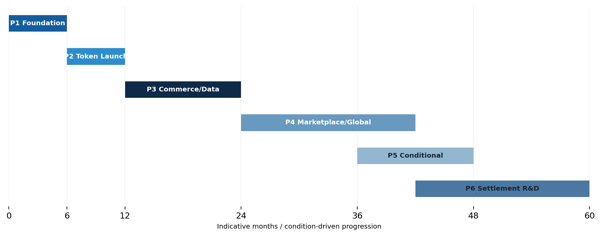

Roadmap
PUBLIC RELEASE · ENGLISH EDITIONRoadmap Overview
| Phase | Timing / Condition | Core Objective |
|---|---|---|
| Phase 1 | 0-6 months | Foundation & Legal Infrastructure |
| Phase 2 | 6-12 months | Token Launch & Utility Preparation |
| Phase 3 | 12-24 months | Commerce, Experience & Data Expansion |
| Phase 4 | 24 months onward | Marketplace & Global Expansion |
| Phase 5 | Entry when conditions are satisfied | Conditional Cooperation Expansion |
| Phase 6 | Long-term research | Future Settlement Infrastructure R&D |
Phase 1-3 Milestones
Phase 1 — Foundation & Legal Infrastructure / 0-6 months
Complete legal establishment of EO Foundation.
Complete core review of EO Token issuance, Pre-Sale, KYC/AML, Wallet, Shopping Mall payment, Treasury, tax and accounting.
Bring Tokenomics, issuance structure, Pre-Sale, technology and operations to a TGE-ready level.
Phase 2 — Token Launch & Utility Preparation / 6-12 months
Complete EO Token TGE and begin Pre-Sale allocation distribution.
Publicly release the Solana-based non-custodial EO Wallet web app.
Complete preparation for initial liquidity, exchange-listing readiness, EO Shopping Mall and Experience Utility integration.
Phase 3 — Commerce, Experience & Data Expansion / 12-24 months
Officially launch EO Shopping Mall and commercialize full EO payment.
Secure real operating cases for Experience & Access Utility.
Commercialize North Korea NOW-based B2B reports, subscription intelligence services and selected EO-exclusive data products.

Phase 4-6 Milestones
Phase 4 — Marketplace & Global Expansion / 24 months onward
Operate a combined direct-sales + Marketplace model.
Secure real EO use cases with external performance, content and commerce partners outside the core EO ecosystem.
Operate an EO-related service or partnership in at least one market outside Korea.
Phase 5 — Conditional Cooperation Expansion / When Conditions Are Satisfied
Complete legal, regulatory and sanctions review for at least one conditional business field.
Secure an executable structure with actual partners such as governments, specialist institutions, companies, NGOs or travel agencies.
Begin a pilot or commercialization effort in at least one conditional project.
Phase 6 — Future Settlement Infrastructure / R&D
Complete institutional and regulatory review of foreign exchange, payments, digital assets, stable-value assets, KYC/AML and sanctions.
Review potential cooperation with financial institutions, payment providers, governments, regulators, legal advisers and technology partners.
Complete a conceptual model or PoC design for licensed settlement / payment infrastructure separated from EO.